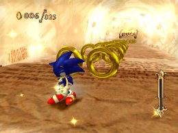
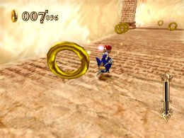

Backing Up
The Basics
Tilting the Wii Remote back toward you to make Sonic walk backwards is one of the more difficult controls in the game. It’s not something you’ll need to do often in this game, but you will need to use it if you go too far and need to backtrack to get to an objective or a switch.

The controls take getting used to, and whenever players need to backtrack they’ve usually just missed something important, and are often a little flustered. Work on getting used to braking, then backing up.
If you have the Hard Brakes skill, it will make things easier for you.
Once you get the hang of things, try going directly from running to backtracking. You’ll be able to go from running to braking, stopping and going backwards in one smooth flow.
 RSS
RSS